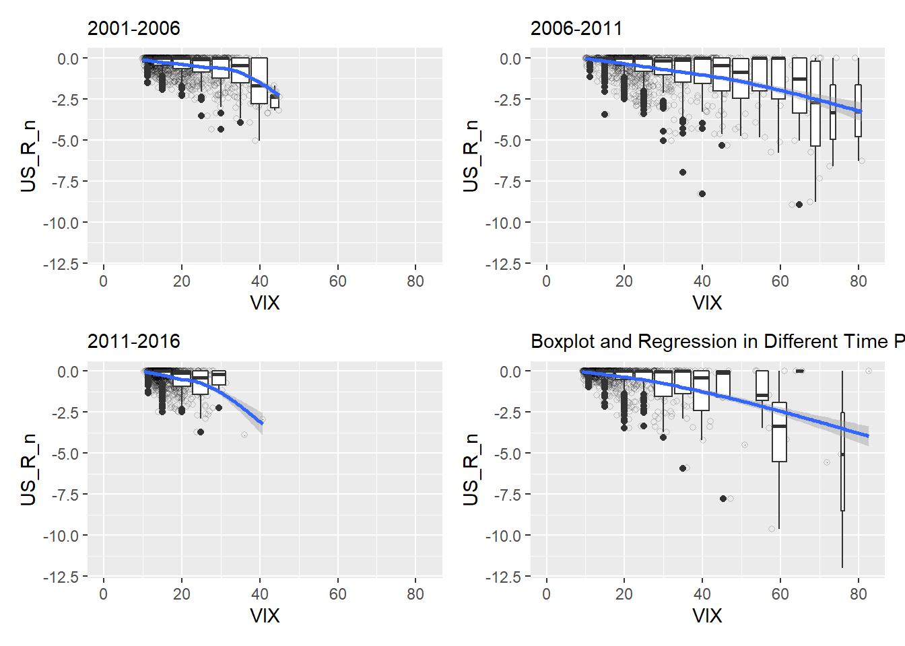
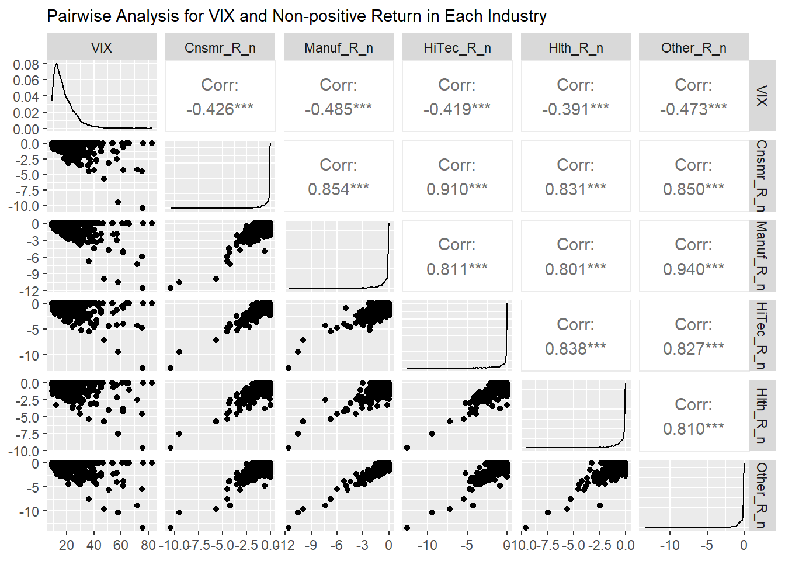
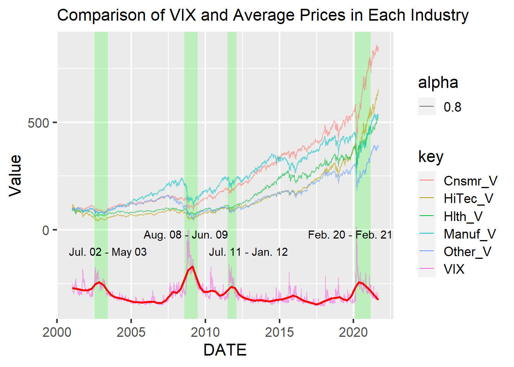
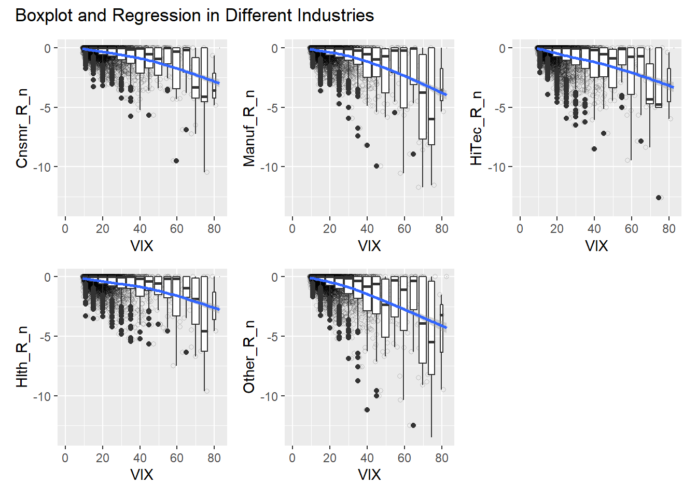
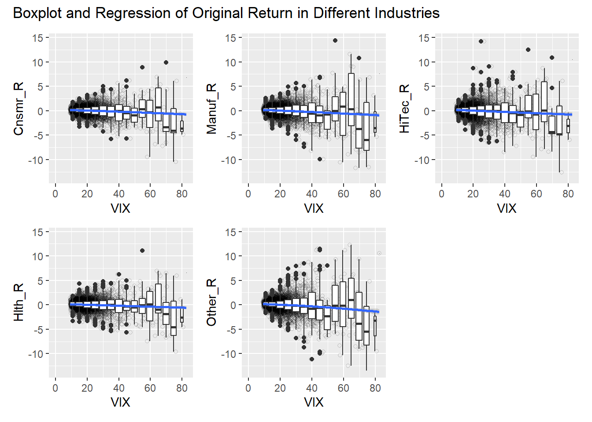
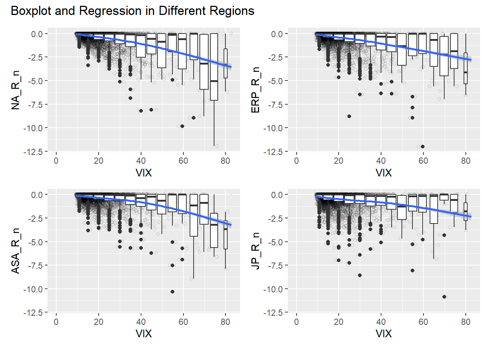
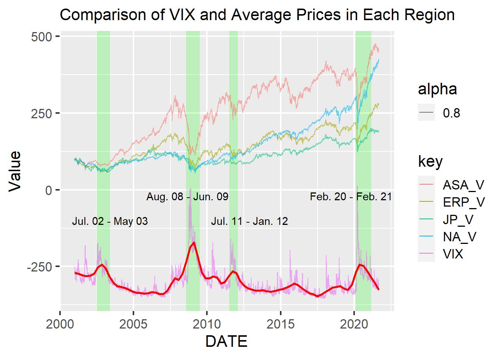
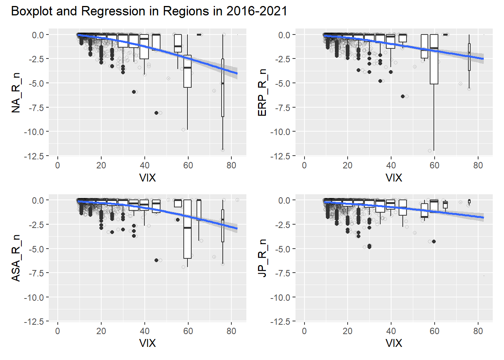

Chapter 5 Results
5.1 VIX Prediction for Future Crisis in Different Time Periods
To analyze the VIX and average stock return data in US markets, we first compared them in the graph below. The blue line shows VIX value, the red curve is the non-parametric loess smoother for VIX value, the swinging line around zero represents US average portfolio return (%), and the periods colored by green indicate high VIX periods. Hereafter, xx_R like US_R means the return data. This graph clearly shows that high VIX leads to high volatility of the US average stock return. Especially, a very high VIX causes intense fluctuations of the return.

The graph below shows comparison between VIX and actual cumulative changes of US average portfolio value. Hereafter, xx_V like US_V means the value data. We can see a high VIX leads to not only high volatility but also huge fall of stock values. Especially, from August 2008 to June 2009 and from February 2020 to February 2021, there are comparably high VIX values and sharp plunges of stock values though the prices recovered quickly within the high VIX periods. Since they are the periods of the 2008 financial crisis and the COVID-19 Crisis, times we know were of great worry and uncertainty in markets, the VIX must be capturing trader’s fears.

The next graph with boxplots and a regression curve tells us implications about concrete threshold of VIX values indicating the high level of concerns in the market. US_R_n on y axis is non-positive values of US average stock returns, which means the US average stock returns whose positive values were changed to zero. We focused on these non-positive values because our goal is to confirm the possibility of using the VIX to avoid investment risks, not to improve total trading return. The graph indicates clear negative correlation with narrow confidence interval between the return and VIX. Also, the boxplots imply that above 70 or more VIX values have strong potential of market crisis. This implication makes sense because only the 2008 financial crisis and the COVID-19 Crisis caused such a high values from 2001 to date.

The following graph shows boxplots and regression of non-positive returns of US average portfolio on VIX values in four time periods with 5 year durations, 2001 to 2006, 2007 to 2011, 2012 to 2016, and 2017 to 2021. The all four periods have both relatively high VIX values and low values, and their graphs show negative relations. On the other hand, we can confirm that there are clear difference of average VIX values among the four periods. 2001 to 2006 and 2012 to 2016 do not have values higher than implicated threshold (70). However, in the two periods, 40 or more VIX leads to return falls, while around 60 or more seems to be threshold in 2007 to 2011 and 2017 to 2021. We can guess that the threshold may change in different financial circumstances because people are getting used to the bad situation when it longs. In high VIX periods, traders may not be surprised by high volatility of stock values. Additionally, we think that they probably cannot avoid to trade because investment is their work even when the risk is a bit high.

5.2 Analysis of Relations Between Industries and VIX
To analyze stock returns in different industries, we analyzed the return data on industries’ value-weight market portfolio in the US. They represent the average market returns in each of 5 industries, Cnsmr, Manuf, HiTec, Hlth, and Other. Cnsmr means the industry comprised of Consumer Durables, Nondurables, Wholesale, Retail, and Some Services, such as Laundries and Repair Shops. Manuf includes Manufacturing, Energy, and Utilities, HiTec indicates Business Equipment, Telephone and Television Transmission, and Hlth contains Healthcare, Medical Equipment, and Drugs. Other consists of Mines, Constr, BldMt, Trans, Hotels, Bus Serv, Entertainment, and Finance.
The below graph created by the ggpairs function in GGally package shows scatter plots, density distribution, and correlations between the VIX and the returns in each industry. Here, XXX_R_n means that the return is converted to non-positive values as US_R_n. We can see the high correlation between each industry and VIX. While the graph shows HiTec and Other have stonger relation with VIX than Cnsmr, Manuf, and Hlth, other information can be read by only this.

The below graph shows changes of VIX and cumulative changes of average portfolio value in each industry in the US. Here, since the purpose of the graph is not to confirm actual VIX value but to compare it with the returns, we multiplied 5 to VIX value and deducted 400 from it to show the value and all returns in one graph. From this graph, we could not obtain useful characteristics to conclude that there are the differences of relations VIX and the returns in each industry.

Then, we confirmed boxplots and regression curves in the following graph. While it exhibits strong negative relationships like the above analysis about all US average stock portfolio, especially on 70 or more VIX values, the boxplots did not provide distinct differences among industries.

Although we attempted to describe the original return data with some positive returns as follows, there are not hints of how to employ VIX differently according to industries.
Finally, we thought that the time period between 2016 to 2021 may had different characteristics because it was highly likely that the COVID-19 Crisis affected each company differently, such as companies in Hlth and HiTec. Nevertheless, we should not deduce something special in the graph below. As a result, we concluded that there is not differences of the predictive capability by VIX depending on industries.

5.3 Analysis of Relations Between Regions and VIX?
To conclude our question, “Are there any more appropriate regions to use VIX?”, we analyzed the return data on regions’ value-weight market portfolio in North America, Europe, Asia, and Japan. They represent the average market return in each region.
The below pair-wised graph shows scatter plots, density distribution, and correlations between the VIX and the returns in regions. XX_R_n is the same definition written in the previous section. Here, stock price about companies in North America has the strongest relation with VIX, -0.42, while that for Japan has the weakest correlation, -0.242. In the scatter plot about VIX and NA_R_n, we can see the most clear in the VIX range of 40 or more. On the other hand, that for Japan has around -8% returns even in the VIX range of 40 or less.

In the graph below, as the one above, we multiplied 5 to VIX value and deducted 400 from it to show the value and all returns in one graph. It shows that Japanese average stock price is more durable than others, especially after 2010. Even though there were several spread of Covid-19 also in Japan, the stock price fall in 2020 is also smaller than others. It implies the economy is in a bit strange situation. This seems to make sense because Bank Of Japan has bought a lot of financial products consistently to improve its financial markets and economy since 2010.

The boxplots and regression show that there may the threshold of VIX in 70 or more in North America, Europe, and Asia. Especially, markets in North America move more heavily when the VIX exceeds teh threshold than Europe and Asia. On the other hand, this graph makes it stand out how abnormal Japanese stock market is. It seems to have the threshold on around 80.

The abnormality stands out more in the following graph for 2016 to 2021. It shows the market impact of Covid-19 is more powerful in North America and Asia than Europe. On the contrary, the Japanese stock market looks like VIX does not affect the market at all. However, as the pairwise analysis above indicates, there is smaller correlation at high level of significance between Japanese stock returns and VIX values.
